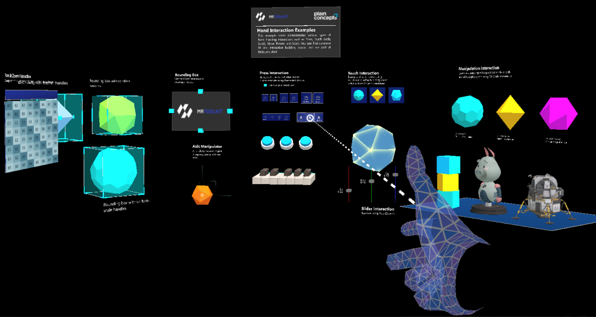

Demo project

The MRTK demo project shows every feature of the toolkit in one scene, grouped in areas. It includes profiles for Windows, Meta Quest, and Pico, so you can run it with the desktop emulation or on a headset. The Content/Scenes/Samples folder also contains one scene per control, such as Buttons.wescene, Sliders.wescene, and ListViewScene.wescene.
Press interaction
Examples of the PressableButton component:
- Standard buttons.
- Toggle buttons.
- Piano keys built from pressable buttons.
Touch interaction
Examples of near interaction that use the demo's HandInteractionTouch behavior, which implements IMixedRealityTouchHandler.
Slider interaction
Sliders built with the PinchSlider component. Moving them changes the color of a connected object in real time.
Manipulation interaction
Objects with the SimpleManipulationHandler component, configured in different ways:
- Objects with constrained manipulation.
- Objects driven by the physics engine that the user can throw. They return to their starting position if they move too far.
Bounding box
Objects with the BoundingBox component, which adds handles to rotate and scale them. The handles can be hidden, and the component can be combined with SimpleManipulationHandler to move the object as well.
Axis manipulation handler
An example of the AxisManipulationHandler component: a three-axis gizmo that moves an object along one axis or a plane without changing its other properties.
Pan and zoom
The demo's HandInteractionPanZoom behavior lets the user pan and zoom content with near and far interaction.
Voice commands
The demo registers a FakeVoiceCommandService that implements IVoiceCommandService. Hold Tab and type the number of a command to simulate that it was recognized, which shows how SpeechHandler components react without a speech recognizer.